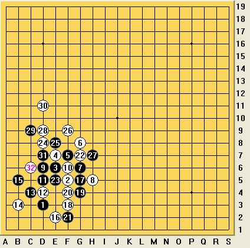

【暑假杯】细节的较量
#1 【暑假杯】细节的较量 作者：蓝天蓝 发表时间：2014-5-26 22:19:29
细节的较量
作者：侠客
家族赛第七轮精彩对局
对局双方： 黑方为弈星的frozenfire 白方为红细胞的shenlan
对局结果 白胜
本文介绍的是暑假杯家族赛第七轮的精彩对局，白方为红细胞的实力派选手shenlan，在整个家族赛中表现不俗。弈星队frozenfire先手，第一手棋依然落在了大家最常走的四三点，白方选择了较为稳妥的F5，黑棋的第三手最常见的是下在D6，黑棋稍优，还有下在E6的，也比较常见，而本局黑棋三手正是下在了E6，双方展开纠缠。
针对这个3手，白棋最好的下法就是进行压制，将黑棋压在角落里，通常的白4有E7和F7，若下在F7，黑棋可有如下的走法，黑白互争外势。
实战中，白方选择了E7这个点，小八卦包夹，此时黑棋如果强行在左下角进攻，最终攻不出来，将失去外势；若强行抢外势，不顾左下角子力，1手将失去意义，等于白棋先手。所以5手的选择要注重连接。实战5手走的F7应该是个不错的点
本以为白6会挡在D5这个位置，黑7、黑9就可以拓展出去，占据优势。如下
1、诱敌成功
可实战中白6并没有挡在D5，而是挡在了G8，继续对黑棋压制，白棋的意图就是认为黑棋在左下角不会有所作为，此时黑棋一定不能盲目的在右上抢占外势，否则就等于白棋先手，算是白棋的一招诱惑，看黑棋应对。黑棋应该利用好1手这颗黑子，进行纠缠牵制。比如手可以下在D5，黑棋在左下角就有一个活二一个眠三，白棋就必须得管了，挡掉黑棋眠三以后，黑棋就比刚才多出来一个活二，利用到了1手。如图所示，黑棋将占据主动
而实战中，黑7选择了G6这个点，应该说不是太好，黑棋是强攻的形状，但连接又不是很多，白棋在防守中又可以增加自己的连接，如对方的8手挡在F5
此时，已经是白棋略优的局势，黑棋该变进攻为防守了，可黑方棋手却没有发现这一点，又想在角落里搞出些名堂，黑9在D6跳三，白棋挡在中间，黑11又在D5跳三，白12挡中间，黑13 C4冲四，黑15又在B5活三，白16挡在E2，黑棋这一连串的活三冲四，把自己所有的活二都消耗完毕了，而给白棋又创造了三个活二，白棋一共有4个活二
这种局面，黑棋已经没有回头路了，开局争二的概念没有理解到。17手目前也只能先挡住白棋的双活三点。
白方看到黑方此时有一个活二，为了打消顾虑决定将这个二交换掉，18手在F3活三，19手黑棋G4反活三，此时20手挡在G3其实就是个不错的选择，先在下面形成攻势，也把黑棋交换完了，黑棋挡下以后，再到上面进攻，优势很大。
实战中的20并没有这样走，而是在F4冲四，然后在G7反三，黑23挡在E5，然后24在D8做棋。
白方可能觉得反正黑棋左下角无胜，索性直接这样做棋进攻，但白方忽略了黑棋的牵制防守手段，若25手在E6做棋，白防E5，27手E9盖住白棋，白棋的攻势将大大减弱。
2、 错失良机
实战的25走了E8，也算是一步牵制的好棋，26手挡在F9，黑棋再次出现了挽救的机会
如果27手挡在E10，白棋的进攻将无法继续，转变为黑白均衡的局面
3、无力回天
实战中黑棋再次错过机会，27走在了H7，让白棋赤裸裸的进攻，28手白棋毫不客气的在D9展开进攻，黑棋再无回天之力。
黑棋29在C9点挡住白棋四三点，30手在D11活三大举进攻，31手挡在E7做出一级连攻，此时32手直接挡在C6点黑棋就没得下了。

实战中白棋32在D10冲四，34挡在了C7点，局面当然也是必胜的，白棋优势太大了，35手走在B6，36手挡在A6，这样这盘棋就结束了，最终黑棋超时判负。
就整盘棋来看，黑棋在棋里方面有待提高，对局面把握不太准，错过不少机会。白方棋手棋力较高，但细节处理上仍有小欠缺，也可能是下的比较随意。整盘棋对弈依然比较精彩。